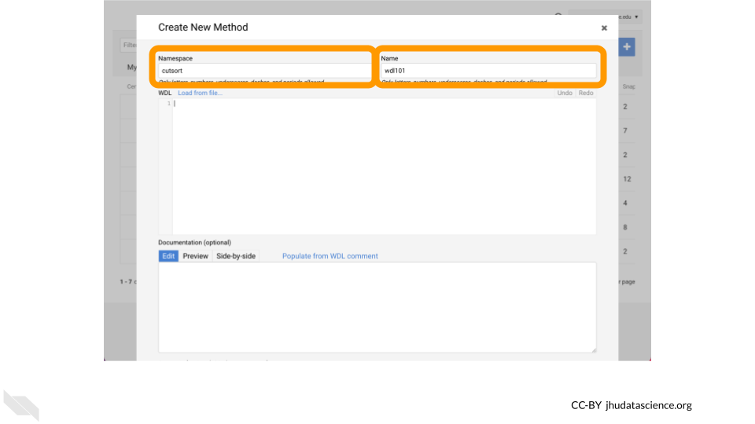

Chapter 3 Write WDL
Now that you’ve successfully run a Workflow on AnVIL, this tutorial demonstrates how you can create and edit a WDL using the Broad Methods Repository. While this “legacy” Methods repository does not have many of the features present in the open-source Dockstore platform, it does offer a convenient web-based editor for demonstration purposes. This material is adapted from the WDL 101 Workshop; you can read about other ways the Broad Methods Repository can be used in this Terra Support article.
Learning Objectives
- Access Broad Methods Repository
- Write WDL101 Training Example
- Export to Terra and run
3.1 Access Broad Methods Repository
Let’s start by navigating to the WDL-puzzles workspace that we previously cloned. Please double check your workspace name to ensure that this is the copy that you made rather than the original as you will not be able to use the original workspace to create a new WDL or run a workflow.
## Warning: replacing previous import 'ellipsis::check_dots_unnamed' by
## 'rlang::check_dots_unnamed' when loading 'tibble'## Warning: replacing previous import 'ellipsis::check_dots_used' by
## 'rlang::check_dots_used' when loading 'tibble'## Warning: replacing previous import 'ellipsis::check_dots_empty' by
## 'rlang::check_dots_empty' when loading 'tibble'## Warning: replacing previous import 'ellipsis::check_dots_unnamed' by
## 'rlang::check_dots_unnamed' when loading 'pillar'## Warning: replacing previous import 'ellipsis::check_dots_used' by
## 'rlang::check_dots_used' when loading 'pillar'## Warning: replacing previous import 'ellipsis::check_dots_empty' by
## 'rlang::check_dots_empty' when loading 'pillar'Once you’ve double checked that you are in a workspace that you can modify and compute, click on the Workflows tab.
Click on the Find a Workflow card.
Select the Broad Methods Repository option.
Click Create New Method.
Add a namespace to the first text box to organize your WDLs.
Your username (prepended with your lab name) is a reasonable namespace as this must be unique across all of Broad Methods Repository.
Afterwards, add a name such as wdl101 to name your WDL.

3.2 Write WDL101 Training Example
Let’s now create a basic WDL!
This simple “Hello, World!” style workflow will take as input a string, call a single task, and save the output of that task to your workspace bucket.
The task that is called will run the Bash echo command to print the input string to stdout.
First note that we are using the WDL 1.0 spec.
version 1.0Let’s add a workflow HelloInput that calls a single task WriteGreeting.
version 1.0
workflow HelloInput {
}
task WriteGreeting{
}To create the task, we will define input, command, output, and runtime blocks.
Note that the command block is defined as a “here doc” and prints the input string to stdout.
version 1.0
workflow HelloInput {
}
task WriteGreeting {
input {
String name_for_greeting
}
command <<<
echo 'hello ~{name_for_greeting}!'
>>>
output {
File Greeting_output = stdout()
}
runtime {
docker: 'ubuntu:latest'
}
}Putting it all together, we now create the workflow by defining an input string stored in a variable named name_input, calling the task by passing name_input to name_for_greeting, and storing what is returned by the task in a File labeled final_output.
version 1.0
workflow HelloInput {
input {
String name_input
}
call WriteGreeting {
input:
name_for_greeting = name_input
}
output {
File final_output = WriteGreeting.Greeting_output
}
}
task WriteGreeting {
input {
String name_for_greeting
}
command <<<
echo 'hello ~{name_for_greeting}!'
>>>
output {
File Greeting_output = stdout()
}
runtime {
docker: 'ubuntu:latest'
}
}3.3 Export to AnVIL and run
Once your WDL is complete, click on Upload.
Now click on Export to Workspace.
Select Use Blank Configuration.
Select a Destination Workspace such as your clone of WDL-puzzles. Afterwards, click Export to Workspace.
Lastly, configure your Workflow as your did previously (e.g. inputs defined by file paths, name in double quotes), click Save, and then click Run Analysis.
Voila! Here’s what you hopefully see after successfully running your WDL101 Training Example !